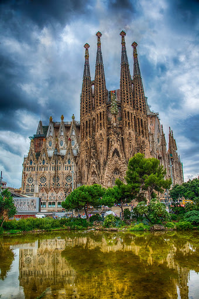
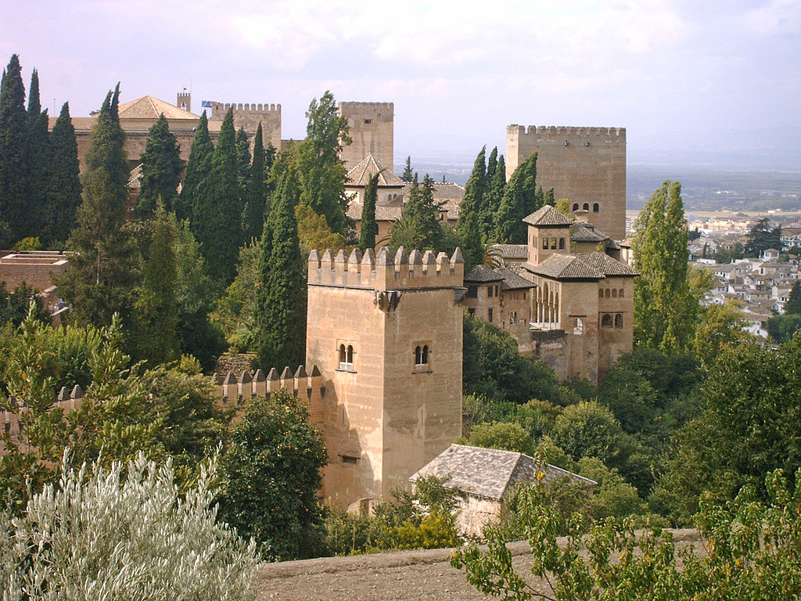
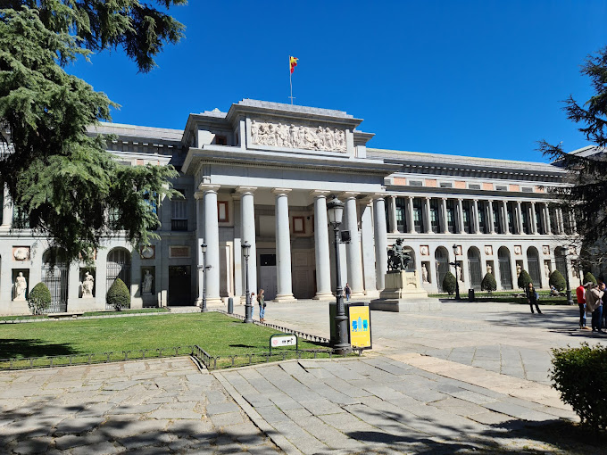

DESCRIÇÃO DO PAÍS:
A Espanha é um país localizado no sudoeste da Europa, na Península Ibérica, compartilhando fronteiras com Portugal, França, Andorra e Gibraltar. Sua capital é Madri, e o idioma oficial é o espanhol. A Espanha possui uma rica diversidade cultural, com diferentes regiões que mantêm tradições e línguas próprias, como o catalão, o basco e o galego. É conhecida por sua gastronomia, arquitetura histórica (como a Alhambra em Granada e a Sagrada Família em Barcelona) e festivais vibrantes, como a famosa tourada e a Festa de San Fermín. Além disso, é um dos destinos turísticos mais populares do mundo, graças às suas praias, cidades históricas e rica herança cultural.
TOP 3 PRINCIPAIS ATRAÇÕES TURÍSTICAS:
-
1. A Sagrada Família (Barcelona):
Uma das obras mais famosas do arquiteto Antoni Gaudí, a Sagrada Família é uma basílica impressionante e inacabada, que atrai milhões de visitantes. Sua arquitetura única e detalhes complexos a tornam um dos maiores ícones da Espanha.
-
2. Alhambra (Granada):
Este magnífico palácio e fortaleza moura, situado em Granada, é um dos exemplos mais bem preservados da arquitetura islâmica na Europa. Com seus belos jardins, fontes e decorações intrincadas, a Alhambra é um Patrimônio Mundial da UNESCO.
-
3. Museu do Prado (Madri):
Localizado na capital espanhola, o Museu do Prado é um dos museus de arte mais importantes do mundo. Ele abriga uma vasta coleção de obras-primas de artistas como Velázquez, Goya e El Greco, tornando-o um destino essencial para os amantes da arte.
SOBRE ESTA PÁGINA:
Esta página foi criada como parte de uma atividade acadêmica para o curso de Técnico em Informática do IFAL - Campus Arapiraca. O objetivo é apresentar informações turísticas sobre a Espanha, destacando suas principais atrações e características culturais. As imagens e links utilizados são meramente ilustrativos e têm o intuito de enriquecer a experiência do usuário. Agradecemos a visita e esperamos que as informações apresentadas sejam úteis para quem deseja conhecer mais sobre este fascinante país.